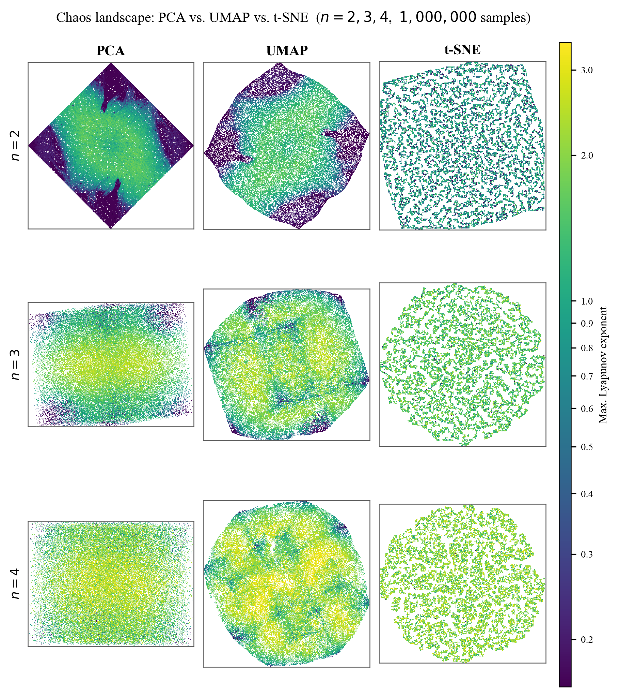
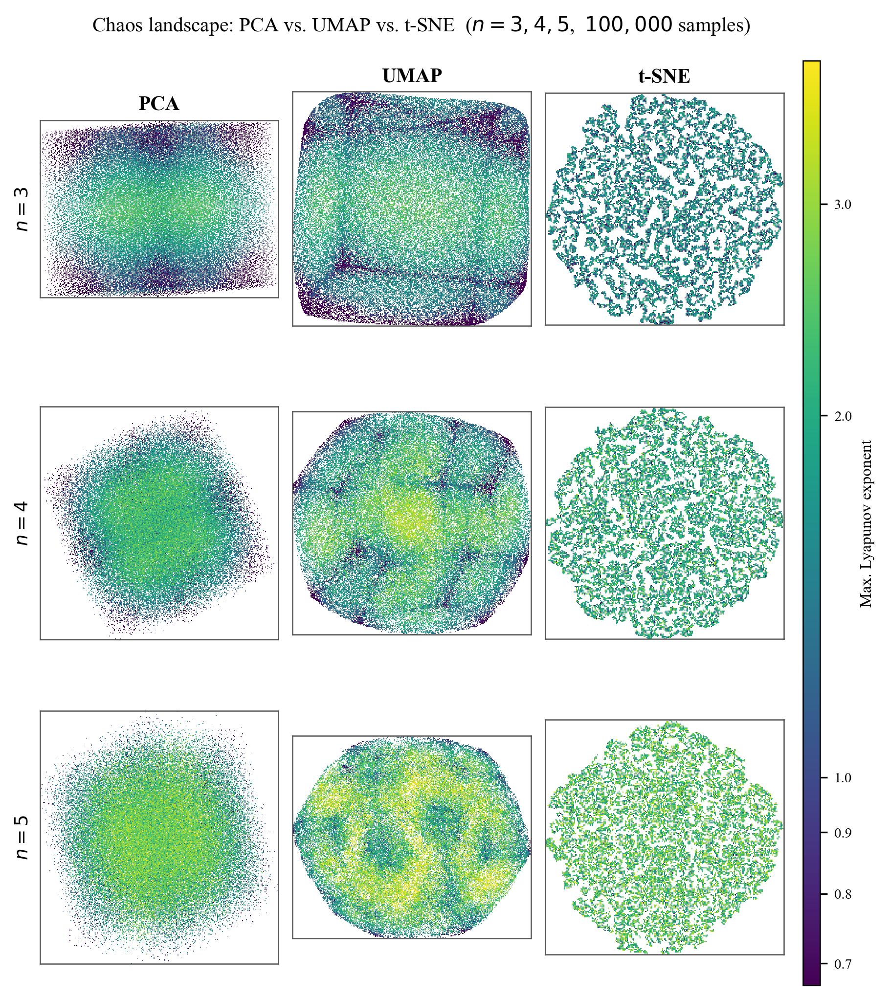
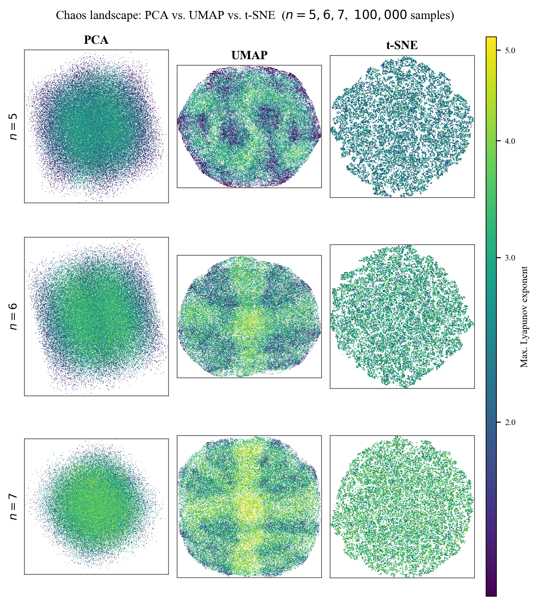
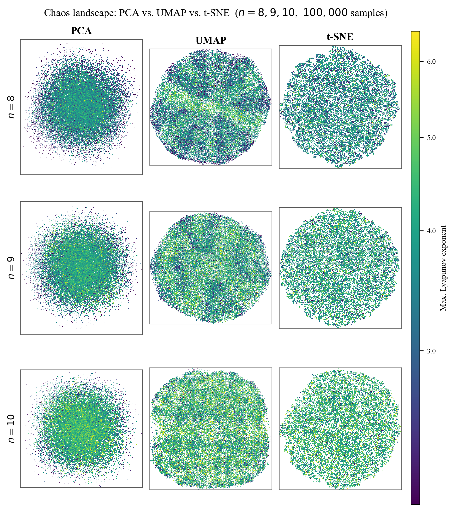
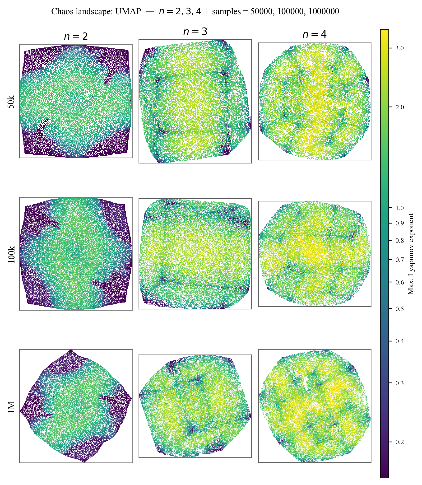

Chaos Landscapes
UMAP · PCA · t-SNE applied to millions of initial conditions, colored by LCE.
Each image is a 2D projection of a high-dimensional phase space.
Each plot: rows = n values, columns = dimensionality reduction method.
Dark regions (low LCE) contain periodic/quasi-periodic orbits.
Bright regions (high LCE) are chaotic.
n = 2, 3, 4 — 1,000,000 samples

PCA (left column) produces featureless gradients with no visible boundary structure.
t-SNE (middle) shows fragmented local clusters but loses global topology.
UMAP (right) reveals coherent fractal-like boundaries between chaotic and
periodic regions, preserving both local and global structure. The periodic orbit islands
(dark regions) shrink dramatically as n increases from 2 to 4.
n = 3, 4, 5 — 100,000 samples

At n = 5, periodic orbits are rare enough that 100,000 samples barely reveals them.
The UMAP embedding still shows coherent structure even at this density — testament to
its topology-preserving properties compared to PCA and t-SNE.
n = 5, 6, 7 — 100,000 samples

At high n, the UMAP landscape becomes increasingly uniform — the vast majority of phase
space is chaotic. This is consistent with the theoretical prediction from Ispolatov & Doebeli
(2014): the fraction of chaotic phase space approaches 1 as dimension grows.
n = 8, 9, 10 — 100,000 samples

At n ≥ 8, the landscape is nearly entirely chaotic. Any remaining low-LCE structure
requires far more samples (100M+) to detect. The dimensionality reduction methods converge
in behaviour since there is little structure left to preserve.
Sample size comparison — UMAP, n = 2, 3, 4

The effect of increasing sample count (rows: 50k, 100k, 1M) on the quality of the UMAP
chaos landscape. At 50k samples, the periodic orbit islands are coarsely resolved.
At 1M, the fractal boundary structure becomes sharp and reliable.